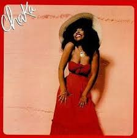
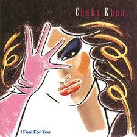

Queen of Funk
"She (Chaka) sings like my horn." - Miles Davis
Chaka Khan Biography
Chaka Khan, born Yvette Marie Stevens on March 23, 1953, in Chicago, Illinois, is an iconic American singer, songwriter, and performer. Known as the "Queen of Funk," she gained fame as the lead vocalist of the funk band Rufus in the 1970s before launching a highly successful solo career.
Chaka Khan's powerful voice, musical versatility, and dynamic stage presence helped her achieve major success in multiple genres, including R&B, funk, jazz, and pop. Some of her most well-known hits include "Tell Me Something Good" with Rufus, as well as solo classics like "I'm Every Woman," "Ain't Nobody," and "Through the Fire."
Throughout her career, Khan has earned 10 Grammy Awards and has influenced generations of musicians with her unique vocal style. She has collaborated with various artists, including Stevie Wonder, Prince, and Quincy Jones, and remains a beloved figure in music. Beyond her work in entertainment, she is also known for her activism, particularly in education, human rights, and drug rehabilitation advocacy.
My Favorite Songs
These are my favorite songs to date, although I am still exploring Chaka's music and adding new ones:
- "Ain't Nobody"
- "Disrespectful"
- "Life is a Dance"
- "I Love Myself"
- "Clouds"
- "Feel For You"
- "Like Sugar"
- "Through the Fire"
- "I'm Every Woman"
My Favorite Video
Chaka Khan's relatively limited number of music videos is largely due to the era in which she rose to fame. Much of her success came during the 1970s and early 1980s, before the widespread popularity of music videos, which exploded with the launch of MTV in 1981. By the time music videos became a dominant form of promotion, Khan was already an established artist with a loyal fanbase built primarily through live performances, radio play, and albums. Additionally, the funk and R&B genres in which she thrived were often less reliant on visual media than pop music, further contributing to the smaller number of videos in her discography. So, there aren't a lot of video representations of her gloriousness, however, there are a few. This one is: